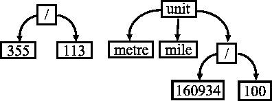

|
|
This section of the on-line help of Strawberry Prolog is designed for users who have no earlier experience with programming in Prolog. It contains short example programs in Prolog and discussions on their development and functioning. The section is an introduction to just the basic features of Prolog without being precise or exhaustive. Users who are determined to take an advanced course in Prolog are recommended the number of textbooks available. Among these is the excellent book Programming in Prologby W. F. Clocksin and C. S. Mellish .
To go through this section, place this help window and that of a running Strawberry Prolog environment side by side on the screen, and then experiment with the example programs while reading. Lines of Prolog programs, which have to be run, can be copied into some Strawberry Prolog window through the clipboard, using the Edit|Copy command of the Windows Help.
0. A
preliminary note
1. Ground concepts
2. Facts
3. Questions
4. Generalization
5. Rules
6. A tracing
session in Strawberry Prolog
7. Dreadful
looping
8. Terms
9. Arithmetical
expressions
10. Infix
notation
11. Lists
12. A list
processing example
13. The anonymous
variable
14. Updating
a Prolog database
15. Inferring
negation
16. not, cut,
fail
A program in Prolog is a collection of facts and rules on how to treat facts in order to check whether some other fact is derivable from the ones in stock. Following this brief description, a Prolog program can be viewed as a kind of sophisticated database, where some of the data items are stored immediately as facts, and other data items can be acquired by applying rules. For this reason a Prolog program is often called Prolog database . This database is created by the programmer, and further processed by the Prolog interpreter (or compiler) in the course of Prolog program execution.
Program execution itself is
a specific procedure of searching in the database in order to find out
whether a certain (kind of) fact can be confirmed on the grounds of the
facts and rules found in the program. Such facts are called goals
. A successful confirmation that some goal can be inferred in a database
is called satisfying a goal .
All procedural behaviour on behalf of Prolog programs, e.g. input and output,
relies on the specific procedure, known as backtracking
, run by the Prolog interpreter during program
execution , and on the occurrence of some predefined (built-in
) kinds of goals in rules. Satisfying such goals, apart from searching
the database , has side
effects , such as opening a file or ringing a bell.
In Prolog facts are understood as formal relationships between objects. The effect of the presence of a fact in a Prolog database is chiefly that the Prolog interpreter will succeed, in case this fact happens to match a goal to be satisfied.
For example, let strawberry , glory , napoleon and turkey be some objects. The facts
likes(turkey, strawberry).
% 'Turkeys like strawberries.'
likes(napoleon, glory). %
'Napoleon likes glory.'
represent the formal relationship likes between these objects. In Prolog a relationship like likes is called predicate. In this example likes is a programmer-defined (user-defined) predicate. Just like every Prolog implementation, Strawberry Prolog contains built-in predicates too. Examples of their working are found below. Consider a Prolog database that consists of above facts only. That is, let the predicate likes be true for the objects turkey and strawberry , and also for the objects napoleon and glory .
To make such a database, select
the File|New command from the main menu, and then enter the above facts
in the newly appeared edit control. It is advisable to immediately select
File|Save as... after entering the text, to specify a file for your example
database to reside on disk in.
To make the Prolog interpreter try to satisfy some goal using this database , one must ask a question with the goal in it. In Strawberry Prolog this means to place it together with the contents of your Prolog database. The question:
?- likes(X, strawberry).
will cause the Prolog interpreter to respond:
Yes.
To see this, you need to run your program. This you can do by selecting the Run|Run (F5) command from the main menu. Just preparing your source for execution, e.g. checking it is error-free, is done by selecting Run|Compile.
This response means that the goal in this question got satisfied successfully. The reason for this is that substituting the object turkey for the variable X makes the goal likes(X, strawberry) appear exactly the same as the fact likes(turkey, strawberry) . Hence the Prolog interpreter can conclude the existence of some object X that satisfies the formal relationship likes(X, strawberry) , which is the goal above, and this object is turkey . The fact that it is turkey which, when substituted for X , brings about success, is also considered by the Prolog interpreter, when it processes the goal likes(X, strawberry) . The effect of this is that the variable X becomes instantiated to the object turkey . This can be demonstrated by asking a bit more complex question:
?- likes(X, strawberry), write(X).
Edit your initial question to make it like this. (Adding the new question to the database next to the previous one will cause both to be answered consecutively.)
Answering this question by the Prolog interpreter consists of consecutively satisfying first the goal likes(X, strawberry) , and second, in case the first goal gets satisfied successfully, the goal write(X) . Now, when the Prolog interpreter arrives at the goal write(X) , X is already instantiated to turkey . Besides, write is a built-in predicate : satisfying write(...) does not cause a database search, but causes whatever its argument, X , is instantiated to to be produced as output. So the overall effect of satisfying the goal above is(F5) :
turkey
Yes.
In practice it is often desirable to concisely specify a large amount of facts of similar kind. For an example of a case, when this can be done in Prolog, consider the following Prolog statement:
likes(X, glory). % 'Everybody likes glory.'
Enter the line above into a new edit control window, to avoid getting it shadowed by other facts on likes.
This statement means that the predicate likes is true, no matter what object stands for X , provided that next to X is glory . The statement, if present in a Prolog database , makes it able to satisfy every concrete goal of the above kind. For example, now the question(you may enter it next to likes(X, glory))
?- likes(turkey, glory).
will get (F5) a Yes . Moreover, a question like
?- likes(Y, Z), write(Y), nl, write(Z).
will also be successfully satisfied in case a database contains the above statement. The output that the Prolog interpreter will produce upon the above question, may look a little strange:
_1
glory
Yes.
The cause for this can be explained by examining in greater detail how
the Prolog interpreter deals with the 'general fact' likes(X,
glory) . When trying to satisfy the goal
likes(Y,
Z) , which is the first step of answering the question
above, the Prolog interpreter encounters likes(X,
glory) in the database
. It finds out that instantiating the variableZ
to the object glory
and assuming that the variables X
and Y stand
for the same thing, make likes(Y,
Z) appear exactly the way likes(X,
glory) does. Since the latter is found in the Prolog
database, this is sufficient for the Prolog interpreter to regard the goal
as successfully satisfied. However, X
is not instantiated when the interpreter arrives
at the goallikes(Y, Z).
It is just assumed that X
and Y stand
for the same object, or, as it is adopted to speak in Prolog slang, the
two variables share . Hence, there is no concrete
object to instantiate Y
to. So, write produces
_1
- an internal name, which has little meaning to the Prolog programmer.
Next, after moving to a new line, comes the object glory
.
A Prolog database doesn't need to contain explicitly all the facts , it can produce. For example, let r be a binary predicate which is a strict linear ordering on some given finite set of objects. Suppose that some Prolog database is expected to be able to produce every fact of the kind r(a, b) , where a and b are some objects and, according to r , a precedes b . If there are n distinct objects, the number of the true facts of this kind is n(n-1)/2 . Since r is a linear ordering, r satisfies the axiom of transitivity
r(a, b)andr(b, c)implyr(a, c)for every a, b, c.
This axiom shows that a fact of the kind r(a, c) doesn't need to be stored immediately in a database, in case there exists some b such that the facts r(a, b) and r(b, c) can be produced by this database, because in this case r(a, c) can be inferred from the former two facts. This observation can easily be utilized in a Prolog database. In order to implement r , that is defined on n objects, a Prolog database needs only to contain n-1 facts of the kind r(a, b) , where object b immediately precedes object a . The rest of the n(n-1)/2 facts about r can be derived by means of a Prolog rule that implements the above axiom. In particular, for n=5 the database might look like this:
r(a1, a2).
r(a2, a3).
r(a3, a4).
r(a4, a5).
r(X, Y) :- r(X, Z), r(Z,
Y). % transitivity
Open a new Prolog-text window with the File|New Strawberry Prolog main menu command, then use the Edit|Copy Windows Help main menu command, to transfer the above lines to the new window through the clipboard.
The last line of this Prolog program is an example of a Prolog rule.
What comes first in a rule is a goal
which defines what facts can be expected to be confirmed by applying this
rule. This goal is called head
of the rule. Typically the goal contains argument places occupied by variables
, as well as by concrete objects. Next in a rule comes a :-
, followed by a sequence of (other) goals. This sequence is called body
of the rule. A rule says that a fact of the kind specified by its head
can be confirmed, provided that all the facts in the body can be confirmed.
6. A tracing session in Strawberry Prolog
Let us now trace how the Prolog interpreter will work to satisfy a goal using this database . Consider the question (add it to the new database, then just Run|Compile it) :
?- r(a2, a5).
To start tracing, select Trace|First step (Ctrl+F5), instead of Run|Run from the main menu. Next, select Trace|Proof Tree, to open a window, that will let you watch what is going on.
This question makes the interpreter try to confirm the fact r(a2, a5) . The interpreter proceeds by looking up in the database from the first line down for a fact to match with r(a2, a5) . None of the facts in the first four lines matches .
To make the interpreter get to work, press F9 (Trace|One step). What you must see is a ?-,on a separate line, followed by the body r(a2,a5),of your question.
So, (another F9) the interpreter arrives at the rule in the last line. The head of this rule matches the goalr(a2, a5) , because substituting a2 for X and a5 for Y makes it look exactly the same as this goal. So, the interpreter makes this substitution and thus reduces the goal r(a2, a5) to the conjunction of the goals r(a2, Z) and r(Z, a5) . The Proof Tree window shows these two goals. A small difference to note is that variable Zis replaced by an internally named variable. Next it tries to satisfy the goal r(a2, Z) . This goal is in red, like the one coming with the question. This is so, because it is now in the focus of the interpreter. The goal next to it, whose turn has not come yet, is in black. To satisfy this new goal, the interpreter starts another search of the database. To launch it, press F9 again. This time it finds that the fact r(a2, a3) matches the goalr(a2, Z) , because a3 can be a substitute for the variable Z . Now, to display that the goal r(a2,Z)is already satisfied, Strawberry Prolog has moved it on the left, and coloured it blue. The interpreter makes this substitution, and now the initial goal r(a2, a5) gets reduced to the conjunction of goal r(a2, a3) and r(a3, a5) , the former already satisfied. Notice, that the uninstantiated variable with an internal name has been replaced by a3everywhere, and not just in the goal already satisfied. In order to satisfy the goal r(a3, a5) , the interpreter starts another search of the database (F9) , and, after realizing that none of the four facts in it matches the goal, arrives at the rule again. According to it, r(a3, a5) gets reduced to the conjunction of r(a3, Z) , and r(Z, a5) . Luckily, the last two goals get successfully satisfied: searching the database for a confirmation of r(a3, Z) ends (F9) at the fact r(a3, a4) and causes the interpreter to substitute a4 for Z ; this transforms r(Z, a5) into r(a4, a5) - a goal which also matches a fact contained in the database. (F9) Finally the interpreter answers
Yes.
Since this was the last goal to satisfy in order to get overall success for the goal come with the question, all red turns green.
To recapitulate, this example contains two occasions of rule application . In both of them the application of the rule starts with finding that the goal to be satisfied by rule application has the form specified in the head of the rule. The procedure of establishing this is called unification . Our example shows that distinct goals can be found appropriate to satisfy by applying the same rule. This is so, because the head of the rule contains variables (X and Y ) which act as placeholders for whatever an individual goal may happen to contain at the corresponding places. When unifying the head of the rule with either goal these variables get substituted by (or instantiated to ) the objects which stand in their places in the goal. These instantiations affect the body of the rule as well. Thus each of the two goals, that get satisfied by applying the rule , reduces to a different pair of goals. The satisfaction of every goal that commences as a result of applying the rule goes in the same way as the satisfaction of the goal that causes the rule to be applied. In other words, the Prolog interpreter works 'recursively'. Although the goals that the rule above gets applied to are both simple facts, the pairs of goals that it 'generates' are 'generalized', i.e. contain the uninstantiated variable Z . This variable is the same one in the goals r(a2, Z) and r(Z, a5) which emerges due to the first application of the rule. It is the same one in the goals r(a3, Z) and r(Z, a5) which emerge due to the second application of the rule, too. But the Z s that occur in the goals r(a2, Z) and r(a3, Z) are distinct.
Rerun the whole tracing by selecting Trace|First step again, then select Trace|Proof Tree and press F9 a few times, to see that, until instantiated, the internally named variables for Zget different numbers for their names.
The cause for this is that these Z
s get allocated for the needs of distinct
applications
of the rule. A most significant consequence of that r(a2,
Z) and r(Z,
a5) share the same Z
variable is that after successfully satisfying r(a2,
Z) the substitution of a3
for Z affects
the next-to-satisfy goal
r(Z,
a5) , and it ceases to be 'generalized'.
The example question above shows that this Prolog database will correctly confirm that two objects are in some relation of precedence, in case they are, according to the informal understanding of this relation. Now consider the following question:
?- r(a5, a4). % 'Whether a5 precedes a4?'
Replace ?- r(a2, a5).in your example text with this question to experiment with its working.
Of course, following the idea behind this database , it would be most desirable for the Prolog interpreter to answer (DO NOTCALL RUN|RUN HERE!)
No.
to this question. Unfortunately the interpreter never does so. The procedure it executes in order to check whether r(a5, a4) is derivable from the contents of the database runs into an infinite loop. Here is how exactly this happens. Start a new tracing session now, and make the first F9 step. First, note that none of the facts in the database matches the goal r(a5, a4) . Having realized this, the interpreter tries to satisfy the goal by applying the rule . That is, it reduces (F9) the goal r(a5, a4) to the sequence of goals r(a5, Z) and r(Z, a4) , and proceeds to satisfy the first of the two. The search for a fact to match r(a5, Z) fails too. So the rule is reached again, and r(a5, Z) gets reduced (F9) to r(a5, Z') and r(Z', Z) . Note that the name Z'(actually some internal name) for the variableZ here aims to emphasize on that the new application of the rule causes a new copy of the variable Z to be allocated . Now the interpreter has to satisfy a new goal r(a5, Z') , which is just like the previous one r(a5, Z) . Since the circumstances under which the new goal emerges differ in no detectable way for the interpreter, it proceeds to satisfy this new goal in exactly the same way (F9) . This causes the consecutive generation of a (potentially) infinite sequence of goals r(a5, Z'') , (F9,...) r(a5, Z''') , etc., i.e. an infinite loop. Fortunately, this loop does not really require the Strawberry Prolog interpreter to be stopped by 'crude force'. To let the situation develop autonomously, press F6, or select Trace|Go. This switches from stepwise to normal execution. The reason for this is that, when generating every new goal, the interpreter also stores some data on how to proceed in case the goal gets satisfied. The accumulation of this data soon consumes the whole available memory and the interpreter stops with an alarming message (Stack is full.) .
It is a good question to ask here: Could the compiler have detected and avoided the redundant loop-to-abort shown above? It is a pity, but Prolog compilers cannot do so. Forthcoming version 2.0 of Strawberry Prolog is planned to handle a loop check option to avoid many kinds of redundant loops.
So far, overcoming the undesirable behavior of the interpreter can be a reason to make a small modification of the example database. It is suitable to specify the relationship object aimmediately precedes object b , which is a special case of the relationship r, object a(merely) precedes object b , by a separate Prolog predicate named, say, c . The four facts from the database changes as follows:
c(a1, a2).
c(a2, a3).
c(a3, a4).
c(a4, a5).
To make this modification, just change rto cin the facts already part of your program.
In order to express that immediately precedes implies (merely) precedes the database can be augmented with the following rule :
r(X, Y) :- c(X, Y). % r is satisfied, provided c is.
Now consider the following modification of the transitivity rule:
r(X, Y) :- c(X, Z), r(Z, Y).
% X precedes Y, provided that
% X immediately precedes
some Z
% and this Z precedes Y.
Make these changes to continue following the example.
Obviously, the modified version of the rule cannot lead the interpreter into an infinite loop, at least not in the fashion of the original one. The user is encouraged to trace in detail the working of the new database on the same example goal as above, and obtain the coveted answer
No.
The examples above exhibit facts as relationships between abstract objects. The objects so far involved have no structure of their own. That is why they are called atoms . Prolog programs allow two more kinds of concrete primitive objects: numbers and character strings . Save that, Prolog provides a way to work with complex objects, which are called structures. Syntactically structures are recorded as terms . Here are some example of terms:
355 / 113 % 355/133 = approximately
pi
unit("inch", "metre", 254
/ 10000) % some data on the correspondence
% between measures of length
A term consists of a functor and a sequence of (simpler) terms, which are called its arguments . The arguments usually follow the functor, and are separated by commas and enclosed in parentheses. Atoms , numbers and character strings are the simplest kinds of terms. As it can easily be noticed, terms do not look very different from facts and goals. Moreover, even rules can be viewed as a special kind of terms. It is often convenient to think in terms of tree-like structures, like these, that correspond to the above terms:

Such structures are available in a large variety of programming languages. A feature of terms, which is rather specific to Prolog, is that one can specify terms which are not concrete objects, but, just like 'generalized' facts and goals in rules, they contain variables as their arguments, and thus represent any object of some specified shape . Some of the rules in the example Prolog database below, when applied , may cause the instantiation of variables inside terms:
nonzero(5). % 5 is a nonzero
number
nonzero(15). % 15 is a nonzero
number
equal_to(X, X). % every object
is equal to itself
equal_to(A * X, B) :- nonzero(A),
equal_to(X, B / A).
% the product of A and X
is equal to B,
% provided that A is nonzero
% and X is the quotient of
B and A.
% The functor of a term that
is an
% arithmetical expression
may stand between
% its arguments.
equal_to(0 * X, 0).
% no matter what X is,
% the product of 0 and X
equals 0.
Make a new window for Prolog text in your running Strawberry Prolog environment and enter the above database.
To see this take place, consider the question(enter this question too, and press F5 to get it answered) :
?- equal_to(5 * X, 2), write(X).
that will actually make the Prolog interpreter produce a 'symbolic solution' to the equation 5x=2 . The response of Prolog to this question is
2 / 5 % the quotient of 2
and 5
Yes.
Thanks to the opportunity to recursively apply Prolog rules , the above program can produce a solution in a more complicated case too:
?- equal_to(5 * (15 * X), 25), write(X).
(Replace the previous question with this one and press F5 to execute)
The answer Prolog will give to this question is:
(25 / 5) / 15
Yes.
Employ the debugging facilities
of Strawberry Prolog to trace in detail the way the above questions get
answered.
The 'solution' of the equation 5.15.X=25 is purely 'symbolic': no calculations are done to simplify the expression obtained for X . This is so, because, although terms like B / A denote arithmetical expressions , Prolog treats them as mere representations of structures, and does not automatically evaluate them. Further, the predicate used to specify that a number is distinct from 0 is tailored to work just for 5 and 15 , that actually occur in the example questions . A more realistic Prolog program to symbolically solve equations needs to refer to predicates that cause their argument terms to get evaluated . These are the is predicate and the comparison predicates . Here is how a more realistic version of nonzero might look like:
nonzero(X) :- X =\= 0.
(Replace the facts on >nonzerowith this rule.)
The body of this rule contains a 'call' to the comparison operator =\=- a built-in predicate , which causes its arguments to be evaluated , in case they are arithmetical expressions , and gets successfully satisfied, in case the values obtained are distinct. In case either argument is not an arithmetical expression , =\= just fails. With this rule instead of the facts about 5 and 15 , the program database above can correctly answer a questions like:
?- equal_to(*(115, X), 250), Y is X, write(Y).
(Replace the previous question with this one and press F5 to execute)
Notice the call to the is predicate in the sequence of goals which constitute this question. This call causes the evaluation of the arithmetical expression that X is instantiated to after the success of equal_to(115 * X, 250) . The numerical value of this expression then instantiates Y . The response to this question is:
2.17391
Yes.
The number 2.17391 is the exact root of the equation 115x=250
.
As it is obvious from the above example, terms
which have *
and / as
their functors are subject to special treatment on behalf of some built-in
Prolog predicates. For the sake of convenience such terms can also be recorded
in the customary infix notation , e.g. 115
* X instead of *(115,
X) . Prefix notation is
available, though rarely used for most terms, e. g. is(X,
Y) is legal too.
A kind of terms that have special syntax for their so frequent use are lists . Just like in other programming languages, in Prolog lists are used to represent finite sequences of arbitrary objects. Here is an example of list:
[likes, [strawberry, X],
[glory, Y]] % example list
The simplest way to record a list in Strawberry Prolog is to write the objects it consists of, separated by commas, and enclosed in brackets. This is practicable only if the structure of the lists is clear in advance. In general a list is just expected to contain a 'first' object. This object is called the head of the list. What remains of a list, if its first object gets removed, is called the tail of a list. A list with head H and tail T can be denoted by
[H|T]
Unifying the example list with this one will result in substituting likes for H and [[strawberry, X], [glory, Y]] for T . It is often necessary to specify a few more elements of a list, starting with the first one, without specifying the whole list. To do this one can write lists like
[F, P | T] % a list with at least two elements
Unifying this list with the example list will cause F , P and T to be instantiated to likes , [strawberry, X] , and [[glory, Y]] respectively. The use of | , though indispensable, introduces lots of ambiguity in recording lists. In particular [strawberry, turkey, napoleon, glory] , [strawberry | [turkey, napoleon | [glory]]] , and even [strawberry, turkey, napoleon, glory|[]] all denote a list, which can be represented by the same tree-like structure.
The tail of a single-element list is the atom[]
, that is also called the empty list .
Let us demonstrate the use of lists by writing a still more concise Prolog database to represent the linear ordering predicate r from the example above. (You need a fresh edit control window again, because this database must not merge with others) The ordering r can be represented as the list [a1, a2, a3, a4] , where every object occurs on the left of the ones it precedes. This list can be included in the Prolog database as the fact :
r_list([a1, a2, a3, a4]).
(Enter this fact into a new window for Prolog text)
Now, in order to define the r predicate, it is enough to represent as a collection of Prolog rules the following statement:
r(a, b)holds iff the above list has the form [a1,..., a | [ak,..., b | T]]
In other words, after eventually removing several elements from the beginning of the list which satisfies r_list , it must be possible to obtain a list that has a for its head , and has b as a member of its tail . Here follow the appropriate Prolog rules:
sublist(L, L).
sublist([H | T], S) :- sublist(T,
S).
member(Y, [Y | Z]).
member(Y, [W | Z]) :- member(Y,
Z).
r(X, Y) :- r_list(L), sublist(L,
[X | T]), member(Y, T).
(Add these lines to the data on the ordering >r)
The predicate sublist defines what it means for some list S to represent the same sequence as some other list L , save the first several members. The first line says that L is a sublist of itself. The second says that S is a sublist of a list with head H and tail T , provided that it is a sublist of the tail T . Next come the rules which define what it means for some object Y to be member of some list. The cases in which this holds are two again: Y has to be either the head of the list or a member of the tail of the list. Finally r(X, Y) holds if some sublist of the one which defines the linear ordering in question starts with X and has Y as a member of its tail.
Run this example program using the
tracing facilities of Strawberry Prolog in order to see how exactly it
works. For this purpose, of course, you must supply an appropriate question.
Note the occurrence of the variable H in the head of the rule in the second line of the definition of sublist . H occurs nowhere else in the rule. It acts just as a placeholder to ensure that the first argument of sublist has some head, no matter which exactly, and occurs nowhere else. The roles of Z in the first line of the definition of member , and that of W in the second one, are similarly inferior. In such cases, programmers in Prolog are recommended to use a special variable, which is called the anonymous variable . It is denoted by _ . Here is how using the anonymous variable changes the above Prolog program:
sublist(L, L).
sublist([_|
T], S) :- sublist(T, S).
member(Y, [Y | _]).
member(Y, [_|
Z]) :- member(Y, Z).
r(X, Y) :- r_list(L), sublist(L,
[X | T]), member(Y, T).
Make the indicated modifications in your window for Prolog text. Then run the whole thing to see that it works just the same way.
The anonymous variable matches
'whatever it encounters' during unification
. Besides, two or more occurrences of the anonymous
variable in the same rule need not stand for the same object.
14. Updating a Prolog database
Thinking of a Prolog program as of a database naturally reminds that databases admit updates. Strawberry Prolog contains built-in predicates , that, when 'called' have the side effect of adding and removing facts and rule from the Prolog database currently processed by the interpreter. These are the predicates assert and retract . Each of these predicates takes a single argument. The side effect of satisfying assert is adding its argument as a fact or as a rule to the end of the database, depending on what the argument is. Invoking the retract predicate causes the interpreter to search the database for the first fact or rule which matches the argument supplied to retract . If there is none, retract will fail. Otherwise the item found gets removed from the database. To see how these predicates work, consider the implementation of the linear ordering predicate r with the aid of the supplementary predicate c again. The predicates add_between and remove_between , which are defined below, can be used to update the list of facts on c and thus insert new objects at specified places in the ordering r , or remove previously inserted objects:
add_between(X, Y, Z) :- %
add object X between objects Y and Z
retract(c(Y, Z)), % by removing
the fact which
% Y immediately precedes
Z
assert(c(Y, X)), % and adding
% that Y immediately precedes
X,
assert(c(X, Z)). % and X
immediately precedes Z.
remove_between(X, Y, Z) :-
retract(c(Y, X)), retract(c(X,
Z)), assert(c(Y, Z)).
% converse to add_between
The predicate add_between which is defined above will not treat the case a new object has to be added, say, as the first one, according to the ordering r . A Prolog predicate that would do this, will first have to find out which object is first, according to r , at the time when the new one is to be added. Then this predicate will be able to assert the fact that the new object immediately precedes the one found. To determine which is the first object in r means to find an object X such that the database does contain a fact of the kind c(X, Y) , and does not contain facts of the kind c(Z, X) . In other words, the rule that is needed must look like
first(X) :- c(X, _),"c(_, X)fails".
The second 'goal' in the body of this rule ought to be successfully satisfied, in case some other goal fails. The Prolog constructs demonstrated so far are not adequate to express such a goal. All of them use the data found in the database 'positively', i.e. the more data present in the database, the bigger the chance for a goal to succeed. One may specify a goal that succeeds exactly in case some other goal fails by using the notbuilt-in predicate . Using not , the predicate add_first(X) , which adds its only argument in the beginning of the linear ordering r , can be defined in the following way:
add_first(X) :- first(Y),
assert(c(X, Y)).
first(Y) :- c(X, _), not(c(_,
X)).
The not predicate is fundamentally different from the other built-in Prolog predicates mentioned so far, because its working affects the very procedure of satisfying goals : in order to satisfy not(X) , the interpreter has to try satisfying the argument X as a goal, and declare failure if X succeeds; in case X fails, not(X) must succeed. Although not itself seems fundamental, the way it gets processed by the interpreter just described can be defined in terms of two still more fundamental built-in Prolog predicates . They are known as 'cut' and fail .
Here is an example on the role of the 'cut' predicate. As it can be seen from the examples above, a Prolog database may contain several rules with their headsmatching the same goal. To satisfy one, the interpreter tries applying all the rules , starting from the topmost rule down, until some rule applies successfully. Sometimes, after successfully satisfying part of the goals which usually constitute the body of a rule, it becomes clear that the goal which caused the rule to be applied will either succeed by successfully finishing the body of the same rule, or fail no matter what other rule are available. For example, suppose that a database contains the rules
equal_to(A * X, B) :- A =:=
0, B =:= 0.
equal_to(A * X, B) :- A =/=
0, equal_to(X, B / A).
The heads of the two rules are exactly the same, and if the first rule applies for some goal successfully up to A =:= 0 , and then B =:= 0 fails, trying to apply the second rule to the same goal is no use. This can be expressed by placing a 'cut' between the two goal in the body of the first rule. For the sake of brevity 'cut' is denoted by ! :
equal_to(A * X, B) :- A =:=
0, !, B =:= 0.
equal_to(A * X, B) :- A =/=
0, equal_to(X, B / A).
Encountering ! in the body of a rule makes the Prolog interpreter give up (or 'cut') all the alternative ways not yet tried to satisfy the goal which caused this rule to be applied. (This goal is also called the cutparent.) In the example above, if A evaluates to 0 and B does not, thanks to ! , the interpreter will not attempt to apply the second rule at all. Here ! just helps save execution time. In general, the alternatives which get discarded due to ! need not be redundant, and ! can affect the very set of goals which a database will satisfy. Together with one more built-in Prolog predicate , namely fail , cut can be used to 'extract' goals from the set of those which a database must be able to satisfy. For example, the following database will confirm every individual fact of the kind likes(X, glory) , but the fact likes(strawberry, glory) :
likes(strawberry, glory) :-
!, fail.
likes(X, glory).
The fail predicate, which is next to ! in the rule just above, causes the application of this rule to fail. Together with ! this rule will cause every question like likes(X, glory) where X is either uninstantiated or instantiated to strawberry to be answered No . Yet, in case X is instantiated to another object, the database will confirm that likes(X, glory) .
Having the above examples of the working of ! and fail in mind, one can easily digest the following definition of the not Prolog predicate.
not(X) :- X, !, fail. % Try
satisfying X. Successful ?
% if yes, not(X) must fail,
having 'cut' off
% alternative ways to succeed.
not(X). % if no, not(X) must
succeed.
This definition displays a way a goal can be passed as an argument to another goal: here, the body of the rule used to define not tells the interpreter to treat X as a goal and try to satisfy it.